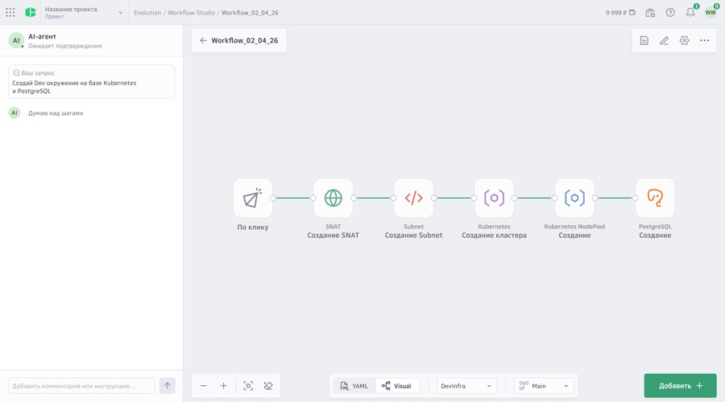
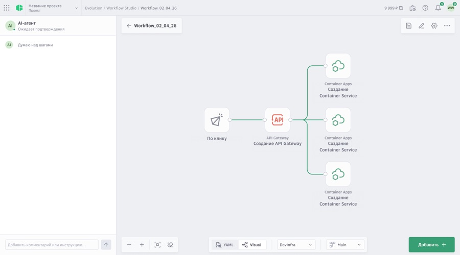

Текст кейса пока на английском. Открыть английскую версию
Workflow Studio
A concept for agent-assisted pipeline building inside Cloud.ru's Evolution platform. Instead of assembling stages by hand on an empty canvas, you describe the engineering task in plain language and an agent proposes the steps and hands back an ordinary, editable workflow.
Точка входа
An empty canvas asks for the answer before the user has stated the problem. A prompt field turns that around: you describe the task, and the system does the decomposition.
The domain chips and template cards below exist for the other half of the audience. Someone who already knows the shape of their pipeline should not have to write a sentence to get to it, so the two entry modes sit on the same screen at the same level, with no mode switch between them.

Холст агента
While the agent works, the original request stays pinned in the left panel. Generated output can only be judged against what was asked, and someone who has lost sight of their own prompt cannot tell a good result from a plausible one.
The YAML and Visual toggle sits in the same bar as zoom and fit. The code view is a peer of the diagram, not an export buried in a menu, which is what keeps the result inspectable.

Сгенерированный воркфлоу
The output is a graph of typed nodes, each carrying its service identity. A graph can be rearranged, partially rerun and diffed; a generated block of config cannot.
Dependency order is shown by position instead of being stated. Networking resolves before the cluster, the cluster before the database, and the second example shows the agent is not limited to a chain: an API gateway fans out to three parallel services, so the proposal carries real topology.


Каталог шагов
The agent is one way in; the catalog is the other. Steps are grouped by domain: utilities, AI Factory, containers, applications, infrastructure, networking, disks, databases, data platform. Every group carries a plain-language line under it, because a name like AI Factory tells an engineer nothing about whether their model serving belongs there.
It opens as a drawer, not a page, so the canvas stays visible behind it. You choose a step against a workflow you can still see.

Сохранённые сценарии
Once generated, a workflow becomes an ordinary listed object with author, updated and created columns. That keeps the feature from fragmenting the product: the agent is an entry point, not a second system with its own storage and its own list.
Anything created by prompt lands in the same place as anything built by hand, and is managed with the same controls.

Концептуальная работа. Избранные экраны из проработки на 14 экранов.